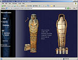
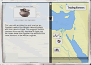
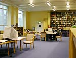
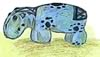

| |
Here are some other web sites that you may find interesting:
British Museum sites
|  |
www.ancientegypt.co.uk
Learn how to build a pyramid, how to survive the perils of the afterlife, and how to wrap a mummy. Staff room for teachers. |
|  |
www.ancientcivilizations.co.uk
Find out about religion, trade, technology and other themes in ancient Egypt, with the help of maps, timelines, illustrations and objects from the Museum's collection. Staff room for teachers. |
|
Children's COMPASS
View a wide range of objects from ancient Egypt or follow one of our online tours: Animal Mummies and Journey into the Mummy. With games, activities and teaching resources.. |
 |
COMPASS
Search the Egyptian galleries, or follow one of our online tours on Cleopatra, Mummies, Egypt in the Old Kingdom or Eternal Egypt. |
|  |
British Museum's Department for Ancient Egypt and Sudan
Find out about the work of the British Museum's Department for Ancient Egypt and Sudan. |
|
|
External sites
The British Museum is not responsible for the content of external websites
|
|
KS2 At a glance
download our pdf for an overview of all resources and events about ancient Egypt for KS2.
|
|
|